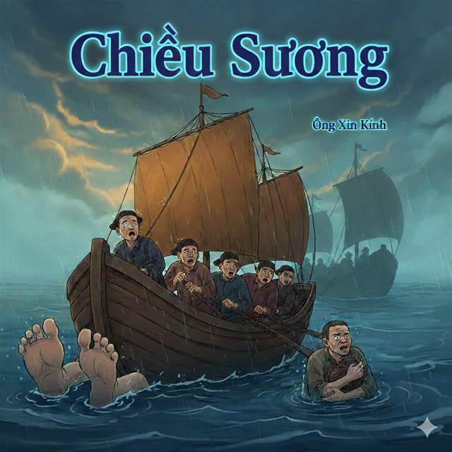
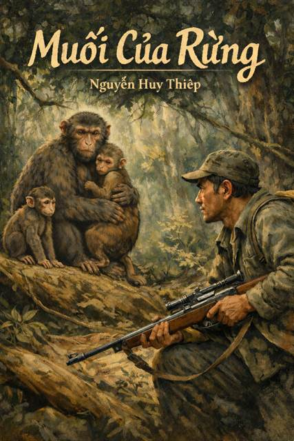

Tác phẩm sáng tạo
Không gian trưng bày tranh vẽ, video và sản phẩm hoạt hình của lớp
Đây là khu lưu trữ các tác phẩm cụ thể của học sinh: tranh minh họa, video dự án, video kể chuyện và sản phẩm hoạt hình. Mỗi khu trưng bày là một tác phẩm riêng biệt, có ý tưởng, câu chuyện và dấu ấn của từng cá nhân hoặc nhóm.

Khu trưng bày 01
Tranh Chiều Sương
Tranh minh họa Chiều sương với sắc xanh trầm.
Khu trưng bày 02
Tranh Chiều Sương
Chiều sương với gam màu ấm, gợi sự an yên.

Khu trưng bày 03
Tranh Muối của rừng
Khung rừng cô đọng, gam màu sâu và dày.

Khu trưng bày 04
Video Kiến và người
Phiên bản video với tiết tấu nhanh.

Khu trưng bày 05
Video Muối của rừng
Giọng đọc ấm, hình ảnh rừng mùa sương.

Khu trưng bày 06
Video Muối của rừng
Nhịp kể nhẹ nhàng, hình ảnh gần gũi.

Khu trưng bày 07
Video Muối của rừng
Góc quay tối giản, tập trung vào lời đọc.
Khu trưng bày 08
Audio Kiến và người
Bản đọc Kiến và người với nhịp trầm.